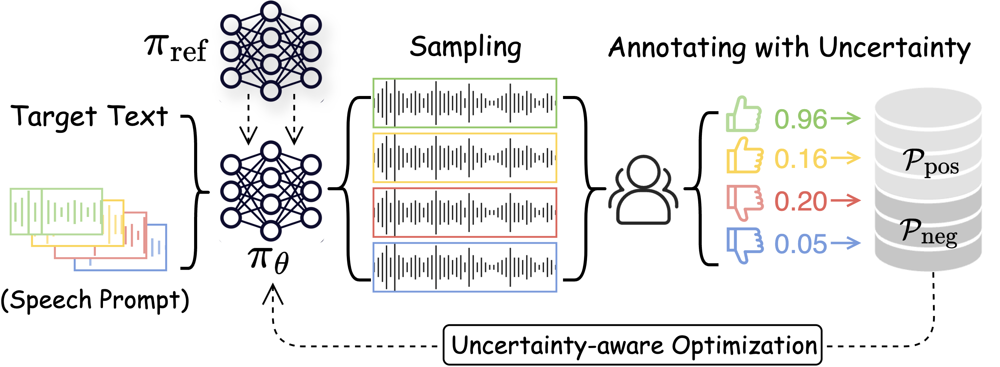

In recent years, text-to-speech (TTS) technology has witnessed impressive advancements, particularly with large-scale training datasets, showcasing human-level speech quality and impressive zero-shot capabilities on unseen speakers. However, despite human subjective evaluations, such as the mean opinion score (MOS), remaining the gold standard for assessing the quality of synthetic speech, even state-of-the-art TTS approaches have kept human feedback isolated from training that resulted in mismatched training objectives and evaluation metrics. In this work, we investigate a novel topic of integrating subjective human evaluation into the TTS training loop. Inspired by the recent success of reinforcement learning from human feedback, we propose a comprehensive sampling-annotating-learning framework tailored to TTS optimization, namely uncertainty-aware optimization (UNO). Specifically, UNO eliminates the need for a reward model or preference data by directly maximizing the utility of speech generations while considering the uncertainty that lies in the inherent variability in subjective human speech perception and evaluations. Experimental results of both subjective and objective evaluations demonstrate that UNO considerably improves the zero-shot performance of TTS models in terms of MOS, word error rate, and speaker similarity. Additionally, we present a remarkable ability of UNO that it can adapt to the desired speaking style in emotional TTS seamlessly and flexibly.
UNO Framework

Comparison of TTS Results
Sample
VoiceCraft
UNO
Issue Types
Text
1
Truncation
If a layman in giving baptism pour the water before saying the words is the child baptized
2
Truncation + Low quality
I will take the black clay with me also the pencil cuttings good bye
3
Missing words
I understand you to say that there are three students who use this stair and are in the habit of passing your door
4
Missing words + unnatural
He wore blue silk stockings blue knee pants with gold buckles a blue ruffled waist and a jacket of bright blue braided with gold
5
Wrong pronunciation
Four or five of the latter only lingered about the door of the prison of uncas wary but close observers of the manner of their captive
6
Long pause
It is the head of a parrot with a little flower in his beak from a picture of carpaccio's one of his series of the life of saint george
7
Unnatural pause
Uncas occupied a distant corner in a reclining attitude being rigidly bound both hands and feet by strong and painful withes
8
Flat tone
Not only this but on the table i found a small ball of black dough or clay with specks of something which looks like sawdust in it
Emotional TTS Results
Sample
VoiceCraft
UNO (surprise)
Arousal
Text
1
0.48 → 0.69
On friday confession will be heard all the afternoon after beads
2
0.61 → 0.70
It was a pain to see them and a sword like pain to see the signs of adolescence that made repellent their pitiable nakedness
3
0.55 → 0.74
It has no beauty whatsoever no specialty of picturesqueness and all its lines are cramped and poor
4
0.53 → 0.71
Well now ennis I declare you have a head and so has my stick
Sample
VoiceCraft
UNO (happy)
Valence
Text
1
0.51 → 0.65
For a full hour he had paced up and down waiting but he could wait no longer
2
0.59 → 0.67
For a long time he had wished to explore the beautiful land of oz in which they lived
3
0.52 → 0.67
Pride after satisfaction uplifted him like long slow waves
4
0.48 → 0.71
There was a unanimous groan at this and much reproach after which in his preoccupied way he explained